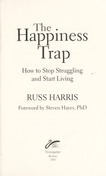

The Happiness Trap: How to Stop Struggling and Start Living
Book·Russ Harris, 2007·幸福的陷阱

A popular entry point to ACT: accept discomfort, clarify your values, and take action.
- Author
- Russ Harris
- Year
- 2007
- Difficulty
- Beginner
- Kind
- Practice
- Schools
- Third-Wave Therapies
- Core theories
- Acceptance and Commitment Therapy
Editions
- Chinese edition 《幸福的陷阱》 [澳]路斯·哈里斯 · tr. 邓竹箐 / 祝卓宏 · 机械工业出版社 · 2018 Douban 8.5 (1529 ratings) Douban page ↗
- English edition The Happiness Trap: How to Stop Struggling and Start Living Russ Harris · Trumpeter (Shambhala) · 2008 Open Library ↗